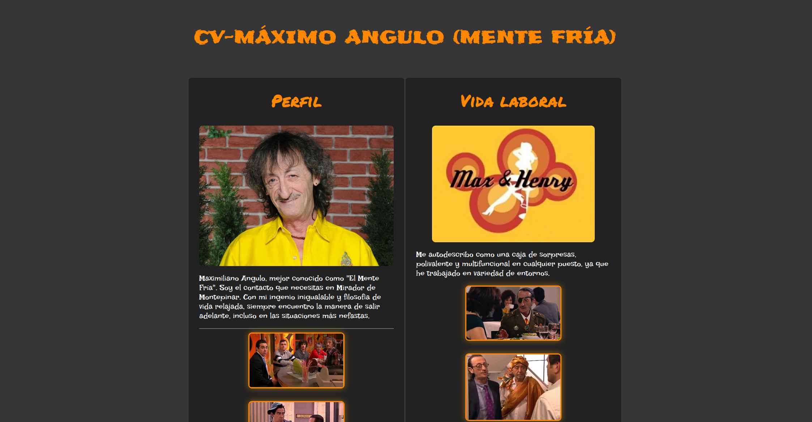
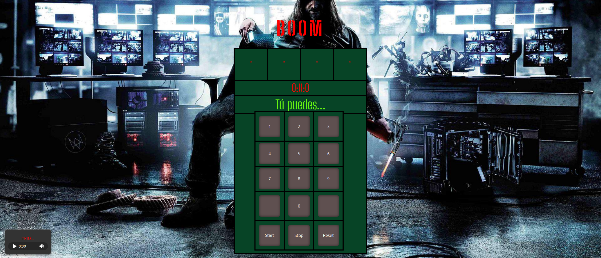
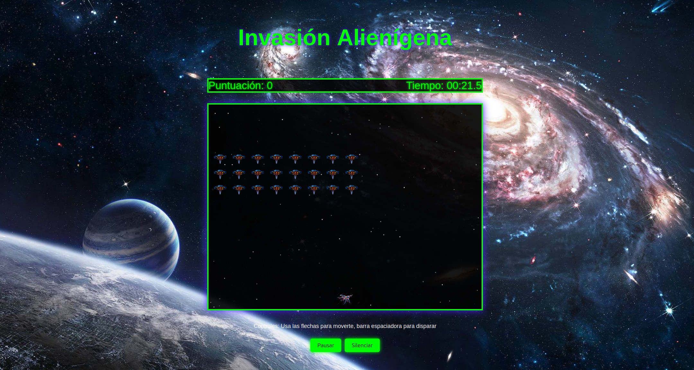
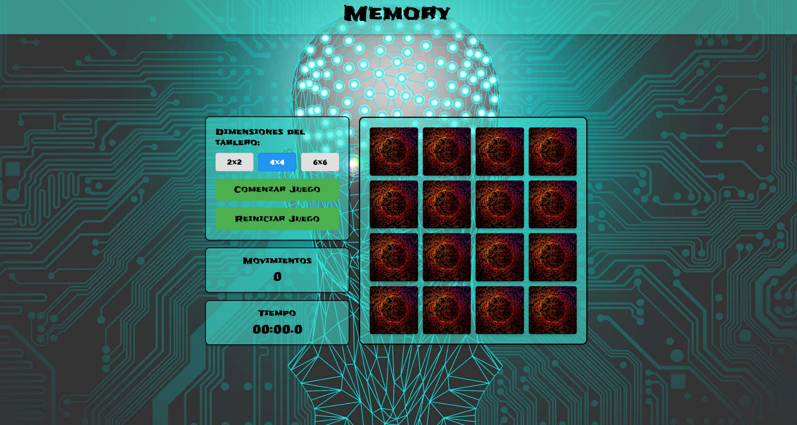
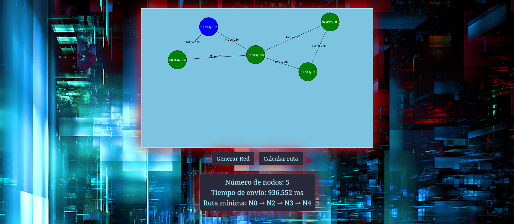

Índice de Prácticas
Profe: Jesús Parrado Alameda


En esta página web podrás encontrar todas las prácticas que vamos realizando en la asignatura de Construcción de Servicios y Aplicaciones Audiovisuales en Internet.
Práctica 1: CV
En esta primera práctica hemos realizado un CV de un personaje a nuestra elección. Hemos trabajado con HTML y CSS. Hemos aprendido a utilizar etiquetas HTML y CSS para dar estilo a nuestra página web.
Práctica 2: BOOM
En esta segunda practica hemos realizado un juego llamado BOOM. Hemos trabajado con HTML, CSS y JavaScript. También hemos aprendido a utilizar JavaScript para hacer que el usuario pueda interactuar con el juego, pulsando botones y obserando animaciones en la pantalla.
Práctica 3: SPACE INVADERS

Práctica 4: MEMORY

Práctica 5: SIMULANDO LA RED
